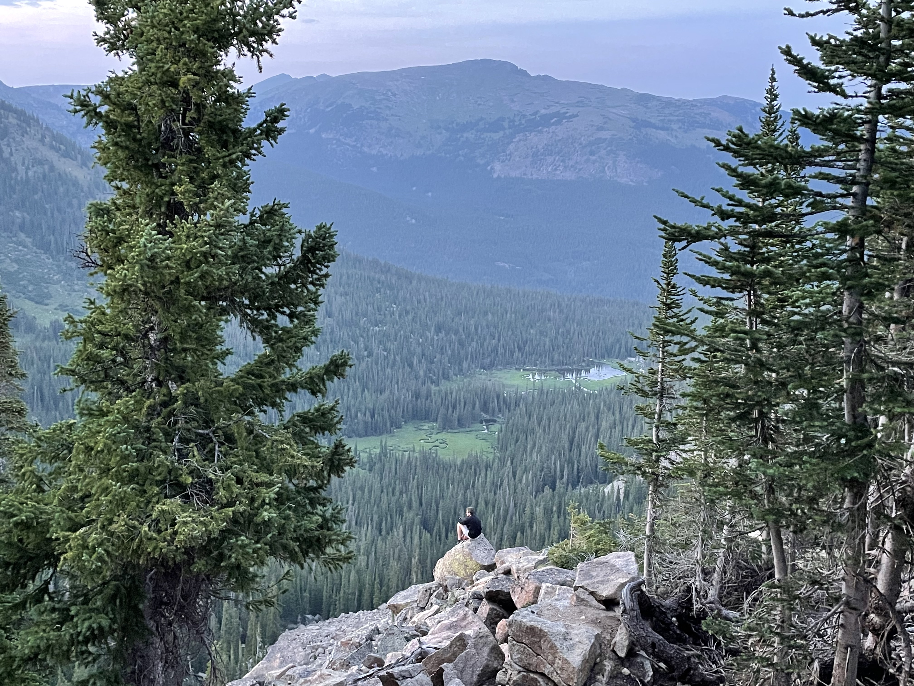

Colorado truly is a gem. There is endless activity for the active, and beautiful sights for the not-so. I would spend most of my time there skiing and playing basketball during the winter and hiking during the summer. The beauty of my state pushed me to pursue more skill in photography, and let me further appreciate beauty.

Me and 10 of my best friends stayed the weekend at a 10th Mountain Division Hut. This is where soldiers would train for the Swiss Alps of some WWII battlefields. Great example of something you could find in CO that would be hard to find anywhere else.